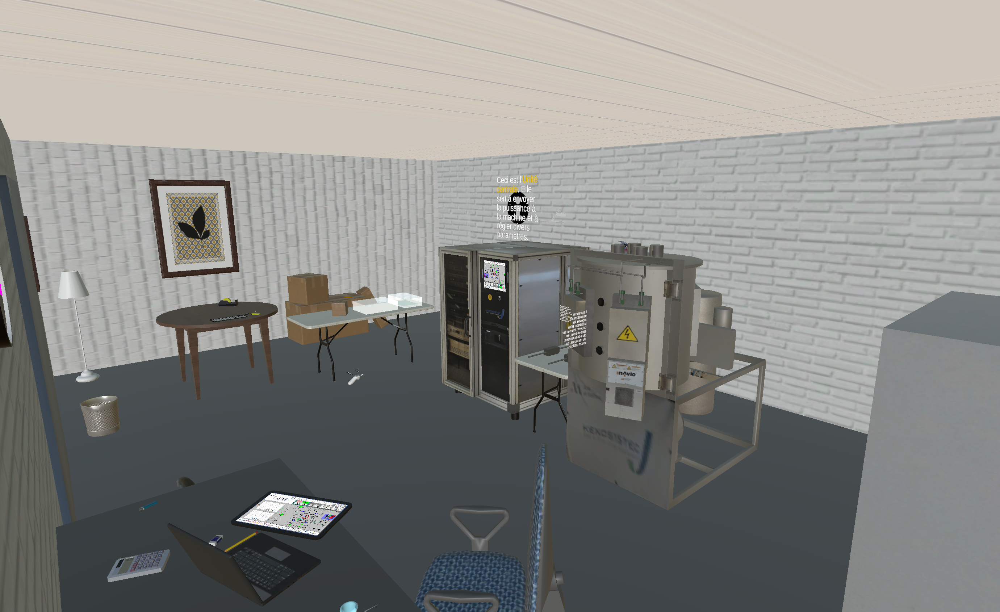
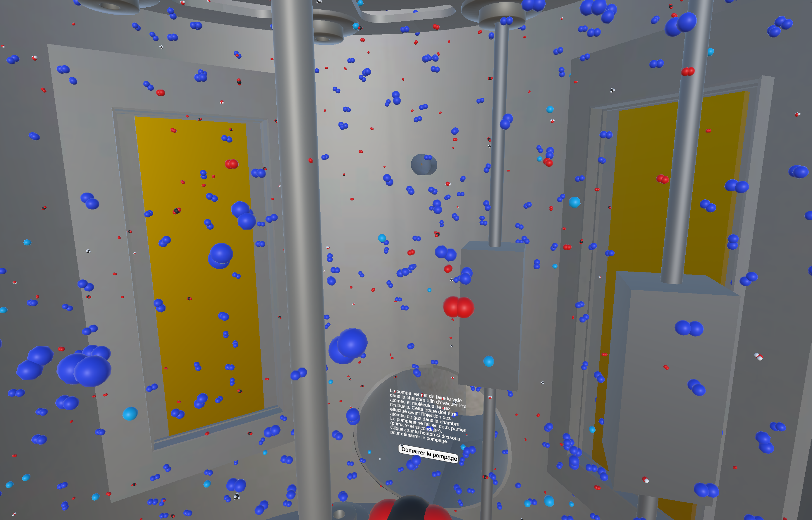
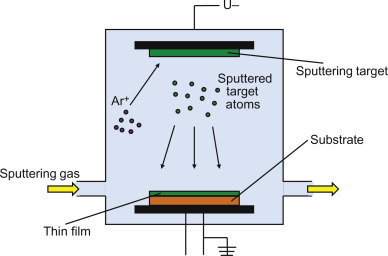
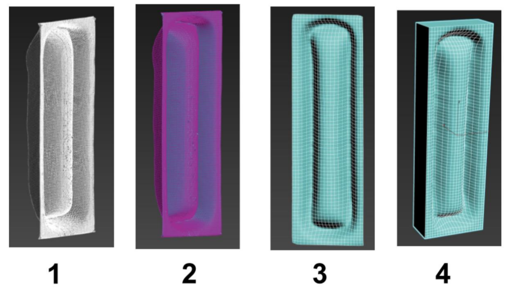
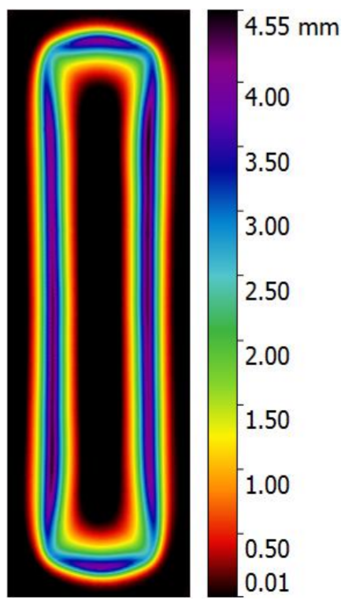
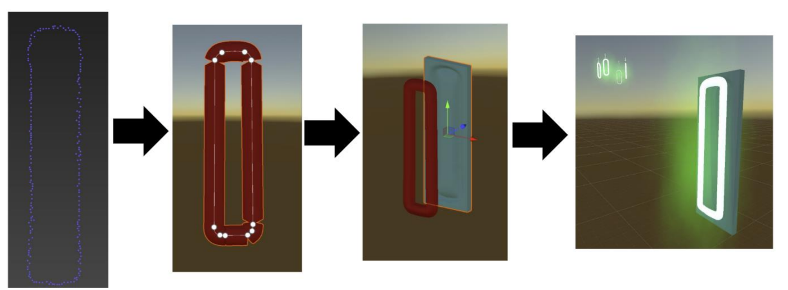
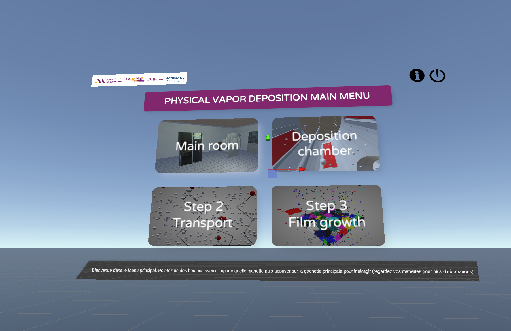
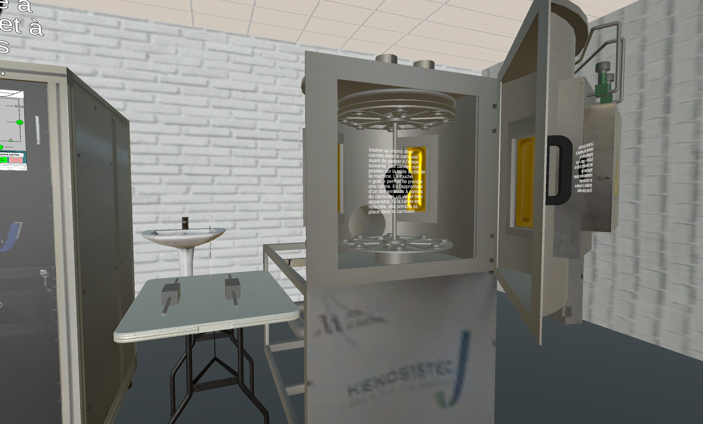
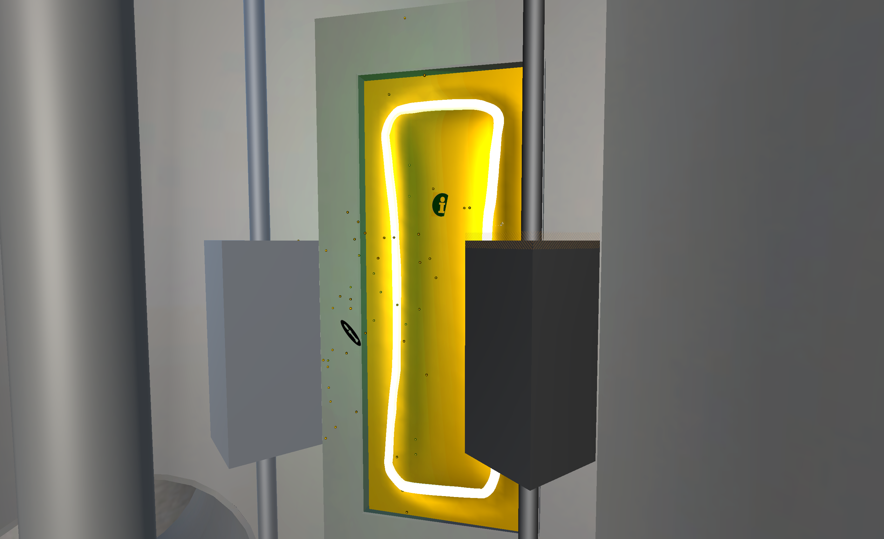

Immersive application for visualizing the PVD (Physical Vapor Deposition) process. Designed to facilitate the understanding of complex physical phenomena related to thin film deposition.
A public research laboratory based in Besançon, France. Specialized in engineering and applied physics, it conducts research on the design and study of materials related to thin film deposition.
A vacuum coating technique. It consists of generating an ionized gas (the plasma) to sputter a source material (the target). The extracted atoms then deposit as a thin protective layer on an object.
This one-month project was carried out in collaboration between my school and the FEMTO-ST institute in Besançon. The main objective of this approach is to popularize and explain the complex Physical Vapor Deposition (PVD) process to a very wide audience, ranging from the general public to students and researchers.
To meet this need for accessibility, the idea of developing an immersive Virtual Reality application was born. Initiated in 2019, this long-term project has evolved year after year thanks to the successive contributions of different student groups. It is in this context of technical continuity that I joined the development team to bring new improvements.
The experience takes place in two main phases. First, the user is immersed in an interactive laboratory room.
Facing a 3D replica of the PVD machine, they can interact directly with the equipment to faithfully and independently reproduce all the preparation steps of the deposition process.

In a second step, the simulation performs a radical scale change: the user finds themselves immersed inside the machine itself, at the atomic scale.
From this unique microscopic environment, they can manually trigger the various steps of the process. This allows them to observe in real-time usually invisible phenomena, such as plasma formation, ion-matter interactions, and atomic dynamics.

Taking over the project along the way, my main mission was to enrich the simulation, make it more reliable, and improve its overall ergonomics:
The first challenge was to assimilate the theoretical functioning of PVD in order to translate these complex physical phenomena into computer algorithms and relevant visuals in the Unity engine.

To simulate target wear, I started with a raw point cloud from a 3D scan. I had to process this heavy data (cleaning, remeshing via MeshLab and 3ds Max) to obtain an optimized 3D model capable of being dynamically deformed in the simulation.

The visual integration of the plasma had to perfectly match physical reality. Based on a reference photo and the 3D point cloud of the wear, I programmed the shape of the plasma to exactly fit the erosion zone of the target, ensuring the consistency of the scene.




